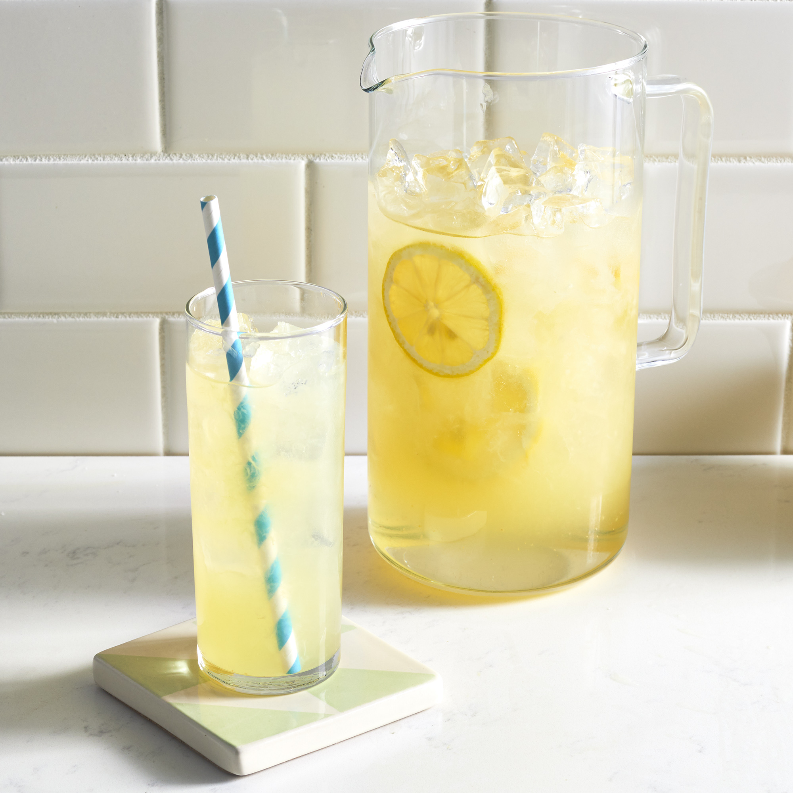

Go Back
Lemonade Recipe

Description
Lemonade is a sweetened lemon-flavored beverage. There are varieties of lemonade found throughout the world. In North America and South Asia, cloudy lemonade is the most common variety. It is traditionally a homemade drink using lemon juice, water, and a sweetener such as cane sugar, simple syrup or honey
Ingredients
- 1 ¾ cups white sugar
- 1 cup water
- 9 medium lemons, or more as needed
- 7 cups of ice-cold water
- ice as needed
Steps
- Combine sugar and 1 cup water in a small saucepan. Stir to dissolve sugar while mixture comes to a boil. Set aside to cool slightly.
- Meanwhile, roll lemons around on your counter to soften. Cut in half lengthwise, and squeeze into a liquid measuring cup. Add pulp to the juice, but discard any seeds. Continue juicing until you have 1 ½ cups fresh juice and pulp.
- Pour 7 cups ice-cold water into a pitcher. Stir in lemon juice and pulp, then add simple syrup to taste. Add ice.